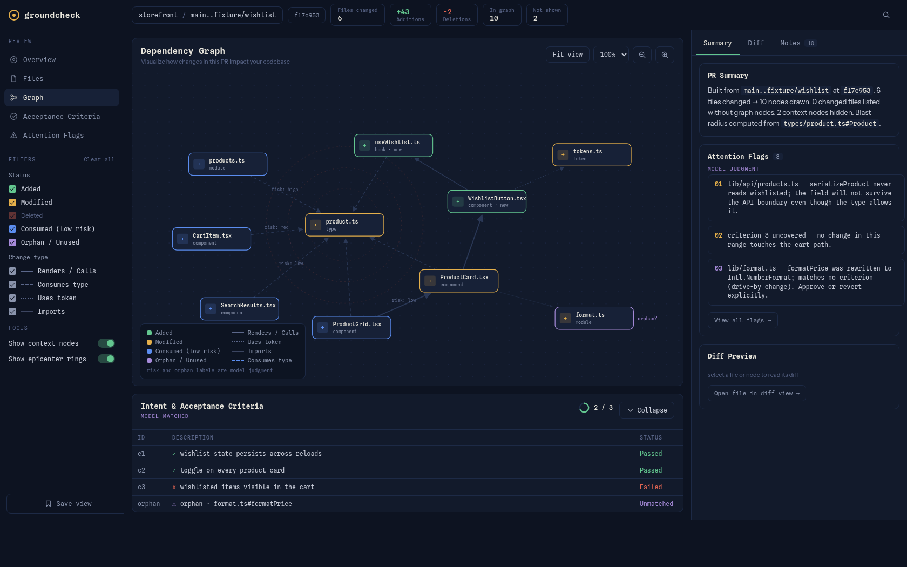
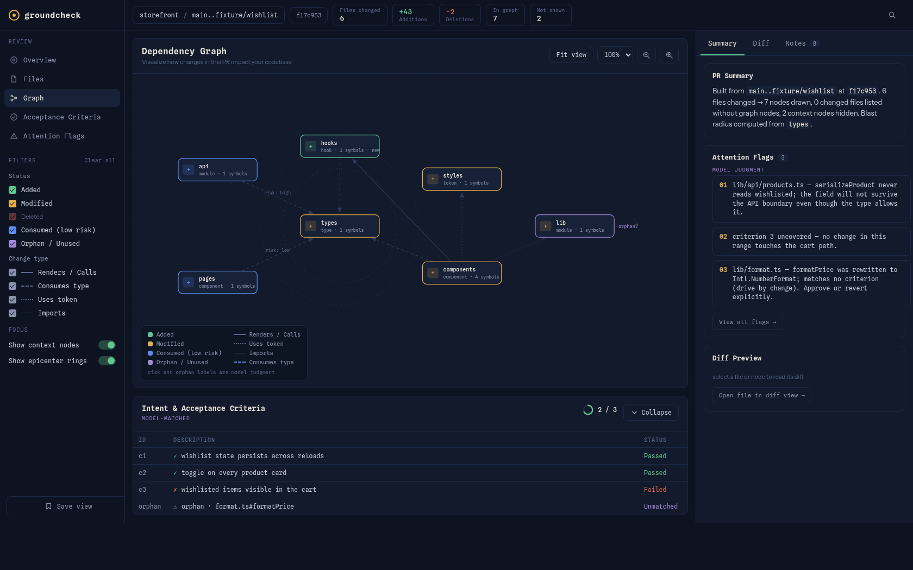

01COMPUTED
See the blast radius
Follow changed symbols through TypeScript references. Every typed edge carries its own file:line evidence.
Visual review for agent-made changes
Asked your agent to build a feature? See whether it was done—and exactly how.
groundcheck turns any git range into a visual, evidence-backed review slice—so you can understand blast radius, intent coverage, and what needs attention before you merge.

Code review has a new speed limit
groundcheck compresses a sprawling diff into a truthful, explorable map. Nothing quietly disappears. Nothing gets invented to make the story cleaner.
Built for high-signal review
Open the exact view your brain needs—from system shape to line-level proof—without rebuilding context from tabs, logs, and agent narration.
Follow changed symbols through TypeScript references. Every typed edge carries its own file:line evidence.
Changed files outside the graph stay visible. Scope gaps are surfaced as facts, never massaged away.
Map acceptance criteria to the nodes that satisfy them—and expose changed code that matches no criterion at all.
One deterministic, self-contained HTML file. No server, no network, no missing context when you share it.
Trust is an architecture
groundcheck keeps computed structure and model interpretation in separate lanes, then validates the final artifact against both sources.
GIT + TYPESCRIPT
Build the dependency slice from the repository—not the agent’s story about it.
MODEL JUDGMENT
Add criteria matches, risk notes, and reading order in a visibly distinct register.
MACHINE CHECK
Diff the rendered artifact back against its inputs. Invented or dropped facts fail hard.
The artifact is the product
These are real screenshots generated from the repository’s fixture tests—not a painted mockup.

Pan the graph. Filter by status. Inspect diffs. Jump from flags to evidence. Save your view.
TypeScript, CSS, config, docs—if it changed, it gets a row and a diff excerpt.
Keep the full shape of the system while focusing attention on what matters now.
Same range, same artifact—byte-identical apart from explicit generation metadata.
Use it anywhere your coding agent can read files, write files, and run shell commands.
Your next change deserves a map
Point groundcheck at a branch. Get the whole truth in one file.
$ groundcheck main..feat/wishlist